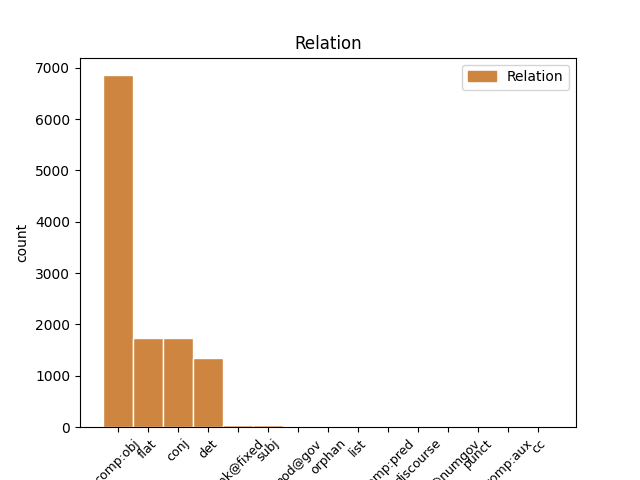
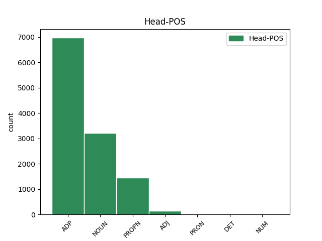
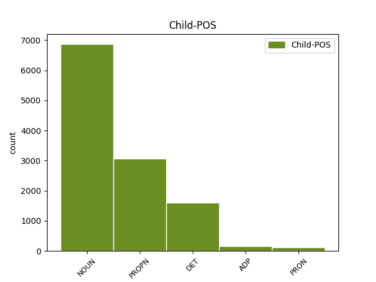

Distribution of features within this leaf



Agreement Rules sorted by frequency.
- When the dependent token is the direct object complements(comp:obj) of the head token, and the dependent token is NOUN.
1 Međutim _ _ _ _ 0 _ _ _
2 , _ _ _ _ 0 _ _ _
3 kao _ _ _ _ 0 _ _ _
4 što _ _ _ _ 0 _ _ _
5 lagano _ _ _ _ 0 _ _ _
6 , _ _ _ _ 0 _ _ _
7 ali _ _ _ _ 0 _ _ _
8 sigurno _ _ _ _ 0 _ _ _
9 napreduje _ _ _ _ 0 _ _ _
10 širenje _ _ _ _ 0 _ _ _
11 nuklearnih _ _ _ _ 0 _ _ _
12 centrala _ _ _ _ 0 _ _ _
13 po _ _ _ _ 0 _ _ _
14 svetu _ _ _ _ 0 _ _ _
15 usred usred ADP Sg Case=Gen 0 _ _ _
16 ekonomske _ _ _ _ 0 _ _ _
17 isplativosti isplativost NOUN Ncfsg Case=Gen|Gender=Fem|Number=Sing 15 comp:obj _ _
18 dogod _ _ _ _ 0 _ _ _
19 nema _ _ _ _ 0 _ _ _
20 akcidenata _ _ _ _ 0 _ _ _
21 , _ _ _ _ 0 _ _ _
22 tako _ _ _ _ 0 _ _ _
23 će _ _ _ _ 0 _ _ _
24 barem _ _ _ _ 0 _ _ _
25 zasad _ _ _ _ 0 _ _ _
26 i _ _ _ _ 0 _ _ _
27 Internet _ _ _ _ 0 _ _ _
28 stvari _ _ _ _ 0 _ _ _
29 nastaviti _ _ _ _ 0 _ _ _
30 da _ _ _ _ 0 _ _ _
31 postaje _ _ _ _ 0 _ _ _
32 realnost _ _ _ _ 0 _ _ _
33 , _ _ _ _ 0 _ _ _
34 dobrim _ _ _ _ 0 _ _ _
35 delom _ _ _ _ 0 _ _ _
36 i _ _ _ _ 0 _ _ _
37 zato _ _ _ _ 0 _ _ _
38 što _ _ _ _ 0 _ _ _
39 su _ _ _ _ 0 _ _ _
40 mlađe _ _ _ _ 0 _ _ _
41 generacije _ _ _ _ 0 _ _ _
42 već _ _ _ _ 0 _ _ _
43 od _ _ _ _ 0 _ _ _
44 malena _ _ _ _ 0 _ _ _
45 okružene _ _ _ _ 0 _ _ _
46 takvim _ _ _ _ 0 _ _ _
47 tehnološkim _ _ _ _ 0 _ _ _
48 konceptom _ _ _ _ 0 _ _ _
49 , _ _ _ _ 0 _ _ _
50 pa _ _ _ _ 0 _ _ _
51 i _ _ _ _ 0 _ _ _
52 delimično _ _ _ _ 0 _ _ _
53 integrisane _ _ _ _ 0 _ _ _
54 u _ _ _ _ 0 _ _ _
55 njega _ _ _ _ 0 _ _ _
56 . _ _ _ _ 0 _ _ _
1 Naime _ _ _ _ 0 _ _ _
2 , _ _ _ _ 0 _ _ _
3 2016. _ _ _ _ 0 _ _ _
4 jedan _ _ _ _ 0 _ _ _
5 pametni _ _ _ _ 0 _ _ _
6 automobil _ _ _ _ 0 _ _ _
7 američkog _ _ _ _ 0 _ _ _
8 proizvođača _ _ _ _ 0 _ _ _
9 Tesla Tesla PROPN Npmsn Case=Nom|Gender=Masc|Number=Sing 0 _ _ _
10 Motors Motors PROPN Npmsn Case=Nom|Gender=Masc|Number=Sing 9 flat _ _
11 nije _ _ _ _ 0 _ _ _
12 uspeo _ _ _ _ 0 _ _ _
13 da _ _ _ _ 0 _ _ _
14 uoči _ _ _ _ 0 _ _ _
15 razliku _ _ _ _ 0 _ _ _
16 između _ _ _ _ 0 _ _ _
17 bele _ _ _ _ 0 _ _ _
18 površine _ _ _ _ 0 _ _ _
19 prikolice _ _ _ _ 0 _ _ _
20 i _ _ _ _ 0 _ _ _
21 neba _ _ _ _ 0 _ _ _
22 i _ _ _ _ 0 _ _ _
23 došlo _ _ _ _ 0 _ _ _
24 je _ _ _ _ 0 _ _ _
25 do _ _ _ _ 0 _ _ _
26 sudara _ _ _ _ 0 _ _ _
27 sa _ _ _ _ 0 _ _ _
28 smrtnim _ _ _ _ 0 _ _ _
29 ishodom _ _ _ _ 0 _ _ _
30 . _ _ _ _ 0 _ _ _
1 Međutim _ _ _ _ 0 _ _ _
2 , _ _ _ _ 0 _ _ _
3 kao _ _ _ _ 0 _ _ _
4 što _ _ _ _ 0 _ _ _
5 lagano _ _ _ _ 0 _ _ _
6 , _ _ _ _ 0 _ _ _
7 ali _ _ _ _ 0 _ _ _
8 sigurno _ _ _ _ 0 _ _ _
9 napreduje _ _ _ _ 0 _ _ _
10 širenje _ _ _ _ 0 _ _ _
11 nuklearnih _ _ _ _ 0 _ _ _
12 centrala _ _ _ _ 0 _ _ _
13 po _ _ _ _ 0 _ _ _
14 svetu _ _ _ _ 0 _ _ _
15 usred _ _ _ _ 0 _ _ _
16 ekonomske _ _ _ _ 0 _ _ _
17 isplativosti _ _ _ _ 0 _ _ _
18 dogod _ _ _ _ 0 _ _ _
19 nema _ _ _ _ 0 _ _ _
20 akcidenata _ _ _ _ 0 _ _ _
21 , _ _ _ _ 0 _ _ _
22 tako _ _ _ _ 0 _ _ _
23 će _ _ _ _ 0 _ _ _
24 barem _ _ _ _ 0 _ _ _
25 zasad _ _ _ _ 0 _ _ _
26 i _ _ _ _ 0 _ _ _
27 Internet _ _ _ _ 0 _ _ _
28 stvari _ _ _ _ 0 _ _ _
29 nastaviti _ _ _ _ 0 _ _ _
30 da _ _ _ _ 0 _ _ _
31 postaje _ _ _ _ 0 _ _ _
32 realnost _ _ _ _ 0 _ _ _
33 , _ _ _ _ 0 _ _ _
34 dobrim _ _ _ _ 0 _ _ _
35 delom _ _ _ _ 0 _ _ _
36 i _ _ _ _ 0 _ _ _
37 zato _ _ _ _ 0 _ _ _
38 što _ _ _ _ 0 _ _ _
39 su _ _ _ _ 0 _ _ _
40 mlađe _ _ _ _ 0 _ _ _
41 generacije _ _ _ _ 0 _ _ _
42 već _ _ _ _ 0 _ _ _
43 od _ _ _ _ 0 _ _ _
44 malena _ _ _ _ 0 _ _ _
45 okružene _ _ _ _ 0 _ _ _
46 takvim takav DET Pd-msi Case=Ins|Gender=Masc|Number=Sing|PronType=Dem 48 det _ _
47 tehnološkim _ _ _ _ 0 _ _ _
48 konceptom koncept NOUN Ncmsi Case=Ins|Gender=Masc|Number=Sing 0 _ _ _
49 , _ _ _ _ 0 _ _ _
50 pa _ _ _ _ 0 _ _ _
51 i _ _ _ _ 0 _ _ _
52 delimično _ _ _ _ 0 _ _ _
53 integrisane _ _ _ _ 0 _ _ _
54 u _ _ _ _ 0 _ _ _
55 njega _ _ _ _ 0 _ _ _
56 . _ _ _ _ 0 _ _ _
1 Dakle _ _ _ _ 0 _ _ _
2 , _ _ _ _ 0 _ _ _
3 kao _ _ _ _ 0 _ _ _
4 što _ _ _ _ 0 _ _ _
5 se _ _ _ _ 0 _ _ _
6 ne _ _ _ _ 0 _ _ _
7 mogu _ _ _ _ 0 _ _ _
8 poreći _ _ _ _ 0 _ _ _
9 prednosti _ _ _ _ 0 _ _ _
10 Interneta internet NOUN Ncmsg Case=Gen|Gender=Masc|Number=Sing 0 _ _ _
11 stvari _ _ _ _ 0 _ _ _
12 ili _ _ _ _ 0 _ _ _
13 pametnih _ _ _ _ 0 _ _ _
14 tehnologija tehnologija NOUN Ncfpg Case=Gen|Gender=Fem|Number=Plur 10 conj _ SpaceAfter=No
15 , _ _ _ _ 0 _ _ _
16 isto _ _ _ _ 0 _ _ _
17 tako _ _ _ _ 0 _ _ _
18 se _ _ _ _ 0 _ _ _
19 ne _ _ _ _ 0 _ _ _
20 smeju _ _ _ _ 0 _ _ _
21 ni _ _ _ _ 0 _ _ _
22 zanemariti _ _ _ _ 0 _ _ _
23 njihove _ _ _ _ 0 _ _ _
24 brojne _ _ _ _ 0 _ _ _
25 mane _ _ _ _ 0 _ _ _
26 . _ _ _ _ 0 _ _ _
1 Kašmir _ _ _ _ 0 _ _ _
2 Hil _ _ _ _ 0 _ _ _
3 , _ _ _ _ 0 _ _ _
4 novinarka _ _ _ _ 0 _ _ _
5 američkog _ _ _ _ 0 _ _ _
6 poslovnog _ _ _ _ 0 _ _ _
7 magazina _ _ _ _ 0 _ _ _
8 Forbs _ _ _ _ 0 _ _ _
9 , _ _ _ _ 0 _ _ _
10 uspela _ _ _ _ 0 _ _ _
11 je _ _ _ _ 0 _ _ _
12 da _ _ _ _ 0 _ _ _
13 iz _ _ _ _ 0 _ _ _
14 svoje _ _ _ _ 0 _ _ _
15 kuće _ _ _ _ 0 _ _ _
16 u _ _ _ _ 0 _ _ _
17 San _ _ _ _ 0 _ _ _
18 Francisku _ _ _ _ 0 _ _ _
19 putem _ _ _ _ 0 _ _ _
20 pretrage _ _ _ _ 0 _ _ _
21 određenih _ _ _ _ 0 _ _ _
22 specifičnih _ _ _ _ 0 _ _ _
23 pojmova _ _ _ _ 0 _ _ _
24 u _ _ _ _ 0 _ _ _
25 Guglu _ _ _ _ 0 _ _ _
26 preuzme _ _ _ _ 0 _ _ _
27 kontrolu _ _ _ _ 0 _ _ _
28 nad _ _ _ _ 0 _ _ _
29 pametnim _ _ _ _ 0 _ _ _
30 uređajima _ _ _ _ 0 _ _ _
31 u _ _ _ _ 0 _ _ _
32 domu _ _ _ _ 0 _ _ _
33 jedne _ _ _ _ 0 _ _ _
34 porodice _ _ _ _ 0 _ _ _
35 u u ADP Sl Case=Loc 0 _ _ _
36 Oregonu Oregon PROPN Npmsl Case=Loc|Gender=Masc|Number=Sing 35 comp:obj _ SpaceAfter=No
37 . _ _ _ _ 0 _ _ _
1 Dovoljno _ _ _ _ 0 _ _ _
2 je _ _ _ _ 0 _ _ _
3 samo _ _ _ _ 0 _ _ _
4 pomenuti _ _ _ _ 0 _ _ _
5 Pod _ _ _ _ 0 _ _ _
6 vulkanom _ _ _ _ 0 _ _ _
7 Malkolma _ _ _ _ 0 _ _ _
8 Laurija _ _ _ _ 0 _ _ _
9 , _ _ _ _ 0 _ _ _
10 Zenovu _ _ _ _ 0 _ _ _
11 svest _ _ _ _ 0 _ _ _
12 Itala _ _ _ _ 0 _ _ _
13 Zveva _ _ _ _ 0 _ _ _
14 , _ _ _ _ 0 _ _ _
15 O _ _ _ _ 0 _ _ _
16 junacima _ _ _ _ 0 _ _ _
17 i _ _ _ _ 0 _ _ _
18 grobovima _ _ _ _ 0 _ _ _
19 Ernesta _ _ _ _ 0 _ _ _
20 Sabata _ _ _ _ 0 _ _ _
21 , _ _ _ _ 0 _ _ _
22 Džojsov _ _ _ _ 0 _ _ _
23 Uliks _ _ _ _ 0 _ _ _
24 ili _ _ _ _ 0 _ _ _
25 Maestra maestro NOUN Ncmsay Animacy=Anim|Case=Acc|Gender=Masc|Number=Sing 0 _ _ _
26 i _ _ _ _ 0 _ _ _
27 Margaritu Margarita PROPN Npfsa Case=Acc|Gender=Fem|Number=Sing 25 conj _ _
28 Bulgakova _ _ _ _ 0 _ _ _
29 . _ _ _ _ 0 _ _ _
1 Najprizemniji _ _ _ _ 0 _ _ _
2 primer _ _ _ _ 0 _ _ _
3 ove _ _ _ _ 0 _ _ _
4 opasnosti _ _ _ _ 0 _ _ _
5 je _ _ _ _ 0 _ _ _
6 skandal _ _ _ _ 0 _ _ _
7 iz _ _ _ _ 0 _ _ _
8 2014. _ _ _ _ 0 _ _ _
9 kada _ _ _ _ 0 _ _ _
10 su _ _ _ _ 0 _ _ _
11 ukradeni _ _ _ _ 0 _ _ _
12 i _ _ _ _ 0 _ _ _
13 objavljeni _ _ _ _ 0 _ _ _
14 privatni _ _ _ _ 0 _ _ _
15 obnaženi _ _ _ _ 0 _ _ _
16 selfiji _ _ _ _ 0 _ _ _
17 poznatih _ _ _ _ 0 _ _ _
18 osoba _ _ _ _ 0 _ _ _
19 iz _ _ _ _ 0 _ _ _
20 sveta _ _ _ _ 0 _ _ _
21 filma _ _ _ _ 0 _ _ _
22 i _ _ _ _ 0 _ _ _
23 pop _ _ _ _ 0 _ _ _
24 kulture _ _ _ _ 0 _ _ _
25 , _ _ _ _ 0 _ _ _
26 koji _ _ _ _ 0 _ _ _
27 su _ _ _ _ 0 _ _ _
28 bili _ _ _ _ 0 _ _ _
29 pohranjeni _ _ _ _ 0 _ _ _
30 na _ _ _ _ 0 _ _ _
31 oblaku _ _ _ _ 0 _ _ _
32 podataka _ _ _ _ 0 _ _ _
33 u u ADP Sa Case=Acc 0 _ _ _
34 koji koji DET Pi-msan Animacy=Inan|Case=Acc|Gender=Masc|Number=Sing|PronType=Int,Rel 33 comp:obj _ _
35 su _ _ _ _ 0 _ _ _
36 hakeri _ _ _ _ 0 _ _ _
37 upali _ _ _ _ 0 _ _ _
1 Međutim _ _ _ _ 0 _ _ _
2 , _ _ _ _ 0 _ _ _
3 kao _ _ _ _ 0 _ _ _
4 što _ _ _ _ 0 _ _ _
5 lagano _ _ _ _ 0 _ _ _
6 , _ _ _ _ 0 _ _ _
7 ali _ _ _ _ 0 _ _ _
8 sigurno _ _ _ _ 0 _ _ _
9 napreduje _ _ _ _ 0 _ _ _
10 širenje _ _ _ _ 0 _ _ _
11 nuklearnih _ _ _ _ 0 _ _ _
12 centrala _ _ _ _ 0 _ _ _
13 po _ _ _ _ 0 _ _ _
14 svetu _ _ _ _ 0 _ _ _
15 usred _ _ _ _ 0 _ _ _
16 ekonomske _ _ _ _ 0 _ _ _
17 isplativosti _ _ _ _ 0 _ _ _
18 dogod _ _ _ _ 0 _ _ _
19 nema _ _ _ _ 0 _ _ _
20 akcidenata _ _ _ _ 0 _ _ _
21 , _ _ _ _ 0 _ _ _
22 tako _ _ _ _ 0 _ _ _
23 će _ _ _ _ 0 _ _ _
24 barem _ _ _ _ 0 _ _ _
25 zasad _ _ _ _ 0 _ _ _
26 i _ _ _ _ 0 _ _ _
27 Internet _ _ _ _ 0 _ _ _
28 stvari _ _ _ _ 0 _ _ _
29 nastaviti _ _ _ _ 0 _ _ _
30 da _ _ _ _ 0 _ _ _
31 postaje _ _ _ _ 0 _ _ _
32 realnost _ _ _ _ 0 _ _ _
33 , _ _ _ _ 0 _ _ _
34 dobrim _ _ _ _ 0 _ _ _
35 delom _ _ _ _ 0 _ _ _
36 i _ _ _ _ 0 _ _ _
37 zato _ _ _ _ 0 _ _ _
38 što _ _ _ _ 0 _ _ _
39 su _ _ _ _ 0 _ _ _
40 mlađe _ _ _ _ 0 _ _ _
41 generacije _ _ _ _ 0 _ _ _
42 već _ _ _ _ 0 _ _ _
43 od _ _ _ _ 0 _ _ _
44 malena _ _ _ _ 0 _ _ _
45 okružene _ _ _ _ 0 _ _ _
46 takvim _ _ _ _ 0 _ _ _
47 tehnološkim _ _ _ _ 0 _ _ _
48 konceptom _ _ _ _ 0 _ _ _
49 , _ _ _ _ 0 _ _ _
50 pa _ _ _ _ 0 _ _ _
51 i _ _ _ _ 0 _ _ _
52 delimično _ _ _ _ 0 _ _ _
53 integrisane _ _ _ _ 0 _ _ _
54 u u ADP Sa Case=Acc 0 _ _ _
55 njega on PRON Pp3msa Case=Acc|Gender=Masc|Number=Sing|Person=3|PronType=Prs 54 comp:obj _ SpaceAfter=No
56 . _ _ _ _ 0 _ _ _
1 Međutim _ _ _ _ 0 _ _ _
2 , _ _ _ _ 0 _ _ _
3 pogled _ _ _ _ 0 _ _ _
4 iz _ _ _ _ 0 _ _ _
5 korporativnog _ _ _ _ 0 _ _ _
6 ugla _ _ _ _ 0 _ _ _
7 i _ _ _ _ 0 _ _ _
8 državnog _ _ _ _ 0 _ _ _
9 ugla _ _ _ _ 0 _ _ _
10 na _ _ _ _ 0 _ _ _
11 isplativost _ _ _ _ 0 _ _ _
12 Interneta internet NOUN Ncmsg Case=Gen|Gender=Masc|Number=Sing 0 _ _ _
13 stvari stvar NOUN Ncfpg Case=Gen|Gender=Fem|Number=Plur 12 flat _ _
14 nije _ _ _ _ 0 _ _ _
15 nužno _ _ _ _ 0 _ _ _
16 isti _ _ _ _ 0 _ _ _
17 . _ _ _ _ 0 _ _ _
1 Detektiv _ _ _ _ 0 _ _ _
2 se _ _ _ _ 0 _ _ _
3 sada _ _ _ _ 0 _ _ _
4 od _ _ _ _ 0 _ _ _
5 ostalih _ _ _ _ 0 _ _ _
6 junaka _ _ _ _ 0 _ _ _
7 ne _ _ _ _ 0 _ _ _
8 razlikuje _ _ _ _ 0 _ _ _
9 više _ _ _ _ 0 _ _ _
10 po po ADP Sl Case=Loc 0 _ _ _
11 jedinstvenoj _ _ _ _ 0 _ _ _
12 inteligenciji _ _ _ _ 0 _ _ _
13 , _ _ _ _ 0 _ _ _
14 već _ _ _ _ 0 _ _ _
15 po po ADP Sl Case=Loc 10 conj _ _
16 jedinstvenom _ _ _ _ 0 _ _ _
17 osećanju _ _ _ _ 0 _ _ _
18 pravde _ _ _ _ 0 _ _ _
19 . _ _ _ _ 0 _ _ _
1 Slična _ _ _ _ 0 _ _ _
2 debata _ _ _ _ 0 _ _ _
3 o _ _ _ _ 0 _ _ _
4 korisnosti _ _ _ _ 0 _ _ _
5 naspram _ _ _ _ 0 _ _ _
6 štetnosti _ _ _ _ 0 _ _ _
7 nove _ _ _ _ 0 _ _ _
8 tehnologije _ _ _ _ 0 _ _ _
9 se _ _ _ _ 0 _ _ _
10 dugo _ _ _ _ 0 _ _ _
11 vodi _ _ _ _ 0 _ _ _
12 i _ _ _ _ 0 _ _ _
13 po _ _ _ _ 0 _ _ _
14 pitanju _ _ _ _ 0 _ _ _
15 opravdanosti _ _ _ _ 0 _ _ _
16 korišćenja _ _ _ _ 0 _ _ _
17 nuklearne _ _ _ _ 0 _ _ _
18 energije _ _ _ _ 0 _ _ _
19 s sa ADP Si Case=Ins 0 _ _ _
20 obzirom obzir NOUN Ncmsi Case=Ins|Gender=Masc|Number=Sing 19 unk@fixed _ _
21 na _ _ _ _ 0 _ _ _
22 zastrašujuće _ _ _ _ 0 _ _ _
23 posledice _ _ _ _ 0 _ _ _
24 koje _ _ _ _ 0 _ _ _
25 kvar _ _ _ _ 0 _ _ _
26 u _ _ _ _ 0 _ _ _
27 tako _ _ _ _ 0 _ _ _
28 osetljivom _ _ _ _ 0 _ _ _
29 sistemu _ _ _ _ 0 _ _ _
30 može _ _ _ _ 0 _ _ _
31 da _ _ _ _ 0 _ _ _
32 ima _ _ _ _ 0 _ _ _
33 . _ _ _ _ 0 _ _ _
1 Najprizemniji _ _ _ _ 0 _ _ _
2 primer _ _ _ _ 0 _ _ _
3 ove _ _ _ _ 0 _ _ _
4 opasnosti _ _ _ _ 0 _ _ _
5 je _ _ _ _ 0 _ _ _
6 skandal _ _ _ _ 0 _ _ _
7 iz _ _ _ _ 0 _ _ _
8 2014. _ _ _ _ 0 _ _ _
9 kada _ _ _ _ 0 _ _ _
10 su _ _ _ _ 0 _ _ _
11 ukradeni _ _ _ _ 0 _ _ _
12 i _ _ _ _ 0 _ _ _
13 objavljeni objaviti ADJ Appmpny Case=Nom|Definite=Def|Degree=Pos|Gender=Masc|Number=Plur|VerbForm=Part|Voice=Pass 0 _ _ _
14 privatni _ _ _ _ 0 _ _ _
15 obnaženi _ _ _ _ 0 _ _ _
16 selfiji selfi NOUN Ncmpn Case=Nom|Gender=Masc|Number=Plur 13 subj _ _
17 poznatih _ _ _ _ 0 _ _ _
18 osoba _ _ _ _ 0 _ _ _
19 iz _ _ _ _ 0 _ _ _
20 sveta _ _ _ _ 0 _ _ _
21 filma _ _ _ _ 0 _ _ _
22 i _ _ _ _ 0 _ _ _
23 pop _ _ _ _ 0 _ _ _
24 kulture _ _ _ _ 0 _ _ _
25 , _ _ _ _ 0 _ _ _
26 koji _ _ _ _ 0 _ _ _
27 su _ _ _ _ 0 _ _ _
28 bili _ _ _ _ 0 _ _ _
29 pohranjeni _ _ _ _ 0 _ _ _
30 na _ _ _ _ 0 _ _ _
31 oblaku _ _ _ _ 0 _ _ _
32 podataka _ _ _ _ 0 _ _ _
33 u _ _ _ _ 0 _ _ _
34 koji _ _ _ _ 0 _ _ _
35 su _ _ _ _ 0 _ _ _
36 hakeri _ _ _ _ 0 _ _ _
37 upali _ _ _ _ 0 _ _ _
1 Prema _ _ _ _ 0 _ _ _
2 istraživanjima _ _ _ _ 0 _ _ _
3 Instituta _ _ _ _ 0 _ _ _
4 za _ _ _ _ 0 _ _ _
5 javnu _ _ _ _ 0 _ _ _
6 politiku _ _ _ _ 0 _ _ _
7 , _ _ _ _ 0 _ _ _
8 više _ _ _ _ 0 _ _ _
9 od od ADP Sg Case=Gen 12 mod@gov _ _
10 20 _ _ _ _ 0 _ _ _
11 odsto _ _ _ _ 0 _ _ _
12 stanovništva stanovništvo NOUN Ncnsg Case=Gen|Gender=Neut|Number=Sing 0 _ _ _
13 već _ _ _ _ 0 _ _ _
14 je _ _ _ _ 0 _ _ _
15 odlučilo _ _ _ _ 0 _ _ _
16 da _ _ _ _ 0 _ _ _
17 u _ _ _ _ 0 _ _ _
18 nedelju _ _ _ _ 0 _ _ _
19 ne _ _ _ _ 0 _ _ _
20 izlazi _ _ _ _ 0 _ _ _
21 na _ _ _ _ 0 _ _ _
22 glasanje _ _ _ _ 0 _ _ _
23 . _ _ _ _ 0 _ _ _
1 Izabranom izabran ADJ Appfsiy Case=Ins|Definite=Def|Degree=Pos|Gender=Fem|Number=Sing|VerbForm=Part|Voice=Pass 0 _ _ _
2 ili _ _ _ _ 0 _ _ _
3 onom onaj DET Pd-fsi Case=Ins|Gender=Fem|Number=Sing|PronType=Dem 1 conj _ _
4 koja _ _ _ _ 0 _ _ _
5 je _ _ _ _ 0 _ _ _
6 na _ _ _ _ 0 _ _ _
7 izborima _ _ _ _ 0 _ _ _
8 nekim _ _ _ _ 0 _ _ _
9 čudom _ _ _ _ 0 _ _ _
10 poražena _ _ _ _ 0 _ _ _
11 ? _ _ _ _ 0 _ _ _
1 Takođe _ _ _ _ 0 _ _ _
2 u _ _ _ _ 0 _ _ _
3 poslovnim _ _ _ _ 0 _ _ _
4 vestima _ _ _ _ 0 _ _ _
5 : _ _ _ _ 0 _ _ _
6 Ekonomska _ _ _ _ 0 _ _ _
7 inicijativa _ _ _ _ 0 _ _ _
8 za _ _ _ _ 0 _ _ _
9 Kosovo _ _ _ _ 0 _ _ _
10 i _ _ _ _ 0 _ _ _
11 Američka _ _ _ _ 0 _ _ _
12 privredna _ _ _ _ 0 _ _ _
13 komora _ _ _ _ 0 _ _ _
14 na _ _ _ _ 0 _ _ _
15 Kosovu _ _ _ _ 0 _ _ _
16 potpisali _ _ _ _ 0 _ _ _
17 pakt _ _ _ _ 0 _ _ _
18 , _ _ _ _ 0 _ _ _
19 a _ _ _ _ 0 _ _ _
20 Skoplje Skoplje PROPN Npnsn Case=Nom|Gender=Neut|Number=Sing 21 subj _ _
21 domaćin domaćin NOUN Ncmsn Case=Nom|Gender=Masc|Number=Sing 0 _ _ _
22 Globalne _ _ _ _ 0 _ _ _
23 nedelje _ _ _ _ 0 _ _ _
24 preduzetništva _ _ _ _ 0 _ _ _
25 . _ _ _ _ 0 _ _ _
1 Za _ _ _ _ 0 _ _ _
2 mene _ _ _ _ 0 _ _ _
3 grad _ _ _ _ 0 _ _ _
4 Madrid _ _ _ _ 0 _ _ _
5 predstavlja _ _ _ _ 0 _ _ _
6 simbol _ _ _ _ 0 _ _ _
7 mnogih _ _ _ _ 0 _ _ _
8 stvari _ _ _ _ 0 _ _ _
9 -- _ _ _ _ 0 _ _ _
10 mladosti mladost NOUN Ncfsg Case=Gen|Gender=Fem|Number=Sing 0 _ _ _
11 , _ _ _ _ 0 _ _ _
12 doma _ _ _ _ 0 _ _ _
13 , _ _ _ _ 0 _ _ _
14 porodice _ _ _ _ 0 _ _ _
15 i _ _ _ _ 0 _ _ _
16 prijateljstva prijateljstvo NOUN Ncnsg Case=Gen|Gender=Neut|Number=Sing 10 list _ SpaceAfter=No
17 " _ _ _ _ 0 _ _ _
18 , _ _ _ _ 0 _ _ _
19 rekao _ _ _ _ 0 _ _ _
20 je _ _ _ _ 0 _ _ _
21 bugarski _ _ _ _ 0 _ _ _
22 lider _ _ _ _ 0 _ _ _
23 primajući _ _ _ _ 0 _ _ _
24 nagradu _ _ _ _ 0 _ _ _
25 . _ _ _ _ 0 _ _ _
1 Burkaj _ _ _ _ 0 _ _ _
2 je _ _ _ _ 0 _ _ _
3 kritikovao _ _ _ _ 0 _ _ _
4 glavni _ _ _ _ 0 _ _ _
5 kurdski _ _ _ _ 0 _ _ _
6 pokret _ _ _ _ 0 _ _ _
7 zbog zbog ADP Sg Case=Gen 0 _ _ _
8 toga taj DET Pd-nsg Case=Gen|Gender=Neut|Number=Sing|PronType=Dem 7 unk@fixed _ _
9 što _ _ _ _ 0 _ _ _
10 nije _ _ _ _ 0 _ _ _
11 podržao _ _ _ _ 0 _ _ _
12 tursku _ _ _ _ 0 _ _ _
13 vladu _ _ _ _ 0 _ _ _
14 u _ _ _ _ 0 _ _ _
15 njenom _ _ _ _ 0 _ _ _
16 " _ _ _ _ 0 _ _ _
17 otvaranju _ _ _ _ 0 _ _ _
18 prema _ _ _ _ 0 _ _ _
19 Kurdima _ _ _ _ 0 _ _ _
20 " _ _ _ _ 0 _ _ _
21 , _ _ _ _ 0 _ _ _
22 koje _ _ _ _ 0 _ _ _
23 je _ _ _ _ 0 _ _ _
24 u _ _ _ _ 0 _ _ _
25 velikoj _ _ _ _ 0 _ _ _
26 meri _ _ _ _ 0 _ _ _
27 zaustavljeno _ _ _ _ 0 _ _ _
28 od _ _ _ _ 0 _ _ _
29 kako _ _ _ _ 0 _ _ _
30 je _ _ _ _ 0 _ _ _
31 započeto _ _ _ _ 0 _ _ _
32 pre _ _ _ _ 0 _ _ _
33 skoro _ _ _ _ 0 _ _ _
34 dve _ _ _ _ 0 _ _ _
35 godine _ _ _ _ 0 _ _ _
36 . _ _ _ _ 0 _ _ _
1 " _ _ _ _ 0 _ _ _
2 Po _ _ _ _ 0 _ _ _
3 prethodnom _ _ _ _ 0 _ _ _
4 zakonu _ _ _ _ 0 _ _ _
5 postalo _ _ _ _ 0 _ _ _
6 je _ _ _ _ 0 _ _ _
7 očigledno _ _ _ _ 0 _ _ _
8 da _ _ _ _ 0 _ _ _
9 je _ _ _ _ 0 _ _ _
10 za _ _ _ _ 0 _ _ _
11 prodaju _ _ _ _ 0 _ _ _
12 nekretnine _ _ _ _ 0 _ _ _
13 prema _ _ _ _ 0 _ _ _
14 staroj _ _ _ _ 0 _ _ _
15 sudskoj _ _ _ _ 0 _ _ _
16 proceduri _ _ _ _ 0 _ _ _
17 bilo _ _ _ _ 0 _ _ _
18 potrebno _ _ _ _ 0 _ _ _
19 između _ _ _ _ 0 _ _ _
20 tri _ _ _ _ 0 _ _ _
21 i _ _ _ _ 0 _ _ _
22 pet _ _ _ _ 0 _ _ _
23 godina _ _ _ _ 0 _ _ _
24 , _ _ _ _ 0 _ _ _
25 dok _ _ _ _ 0 _ _ _
26 će _ _ _ _ 0 _ _ _
27 sada _ _ _ _ 0 _ _ _
28 to _ _ _ _ 0 _ _ _
29 biti _ _ _ _ 0 _ _ _
30 moguće _ _ _ _ 0 _ _ _
31 u _ _ _ _ 0 _ _ _
32 periodu _ _ _ _ 0 _ _ _
33 od od ADP Sg Case=Gen 0 _ _ _
34 tri _ _ _ _ 0 _ _ _
35 do do ADP Sg Case=Gen 33 comp:obj _ _
36 šest _ _ _ _ 0 _ _ _
37 meseci _ _ _ _ 0 _ _ _
38 " _ _ _ _ 0 _ _ _
39 , _ _ _ _ 0 _ _ _
40 rekao _ _ _ _ 0 _ _ _
41 je _ _ _ _ 0 _ _ _
42 ministar _ _ _ _ 0 _ _ _
43 . _ _ _ _ 0 _ _ _
1 Knjige knjiga NOUN Ncfpn Case=Nom|Gender=Fem|Number=Plur 0 _ _ _
2 - _ _ _ _ 0 _ _ _
3 plovidbe plovidba NOUN Ncfpn Case=Nom|Gender=Fem|Number=Plur 1 orphan _ _
1 Nadam _ _ _ _ 0 _ _ _
2 se _ _ _ _ 0 _ _ _
3 da _ _ _ _ 0 _ _ _
4 će _ _ _ _ 0 _ _ _
5 nakon _ _ _ _ 0 _ _ _
6 okrivljavanja _ _ _ _ 0 _ _ _
7 vladajuće _ _ _ _ 0 _ _ _
8 koalicije _ _ _ _ 0 _ _ _
9 i _ _ _ _ 0 _ _ _
10 usmeravanja _ _ _ _ 0 _ _ _
11 besa _ _ _ _ 0 _ _ _
12 na _ _ _ _ 0 _ _ _
13 „ _ _ _ _ 0 _ _ _
14 njega on PRON Pp3msa Case=Acc|Gender=Masc|Number=Sing|Person=3|PronType=Prs 0 _ _ _
15 ” _ _ _ _ 0 _ _ _
16 i _ _ _ _ 0 _ _ _
17 „ _ _ _ _ 0 _ _ _
18 njih oni PRON Pp3-pa Case=Acc|Number=Plur|Person=3|PronType=Prs 14 conj _ SpaceAfter=No
19 ” _ _ _ _ 0 _ _ _
20 , _ _ _ _ 0 _ _ _
21 opozicija _ _ _ _ 0 _ _ _
22 prihvatiti _ _ _ _ 0 _ _ _
23 svoju _ _ _ _ 0 _ _ _
24 odgovornost _ _ _ _ 0 _ _ _
25 za _ _ _ _ 0 _ _ _
26 neuspeh _ _ _ _ 0 _ _ _
27 i _ _ _ _ 0 _ _ _
28 bolje _ _ _ _ 0 _ _ _
29 artikulisati _ _ _ _ 0 _ _ _
30 svoje _ _ _ _ 0 _ _ _
31 političke _ _ _ _ 0 _ _ _
32 programe _ _ _ _ 0 _ _ _
33 i _ _ _ _ 0 _ _ _
34 ciljeve _ _ _ _ 0 _ _ _
35 . _ _ _ _ 0 _ _ _
1 Merve _ _ _ _ 0 _ _ _
2 Alidži _ _ _ _ 0 _ _ _
3 , _ _ _ _ 0 _ _ _
4 iz _ _ _ _ 0 _ _ _
5 anti-militarističkog _ _ _ _ 0 _ _ _
6 Pokreta _ _ _ _ 0 _ _ _
7 mladih _ _ _ _ 0 _ _ _
8 civila _ _ _ _ 0 _ _ _
9 , _ _ _ _ 0 _ _ _
10 ocenjuje _ _ _ _ 0 _ _ _
11 Burkajev _ _ _ _ 0 _ _ _
12 povratak _ _ _ _ 0 _ _ _
13 kao _ _ _ _ 0 _ _ _
14 " _ _ _ _ 0 _ _ _
15 mali _ _ _ _ 0 _ _ _
16 korak _ _ _ _ 0 _ _ _
17 za _ _ _ _ 0 _ _ _
18 Burkaja _ _ _ _ 0 _ _ _
19 , _ _ _ _ 0 _ _ _
20 ali _ _ _ _ 0 _ _ _
21 veliki velik ADJ Agpmsayn Animacy=Inan|Case=Acc|Definite=Def|Degree=Pos|Gender=Masc|Number=Sing 0 _ _ _
22 za za ADP Sa Case=Acc 21 orphan _ _
23 Tursku _ _ _ _ 0 _ _ _
24 " _ _ _ _ 0 _ _ _
25 , _ _ _ _ 0 _ _ _
26 dodajući _ _ _ _ 0 _ _ _
27 da _ _ _ _ 0 _ _ _
28 je _ _ _ _ 0 _ _ _
29 pravosudna _ _ _ _ 0 _ _ _
30 , _ _ _ _ 0 _ _ _
31 diskurzivna _ _ _ _ 0 _ _ _
32 i _ _ _ _ 0 _ _ _
33 društvena _ _ _ _ 0 _ _ _
34 transformacija _ _ _ _ 0 _ _ _
35 Turske _ _ _ _ 0 _ _ _
36 , _ _ _ _ 0 _ _ _
37 iako _ _ _ _ 0 _ _ _
38 još _ _ _ _ 0 _ _ _
39 uvek _ _ _ _ 0 _ _ _
40 manjkava _ _ _ _ 0 _ _ _
41 , _ _ _ _ 0 _ _ _
42 otvorila _ _ _ _ 0 _ _ _
43 put _ _ _ _ 0 _ _ _
44 za _ _ _ _ 0 _ _ _
45 njegov _ _ _ _ 0 _ _ _
46 povratak _ _ _ _ 0 _ _ _
47 . _ _ _ _ 0 _ _ _
1 Uhapšeno _ _ _ _ 0 _ _ _
2 je _ _ _ _ 0 _ _ _
3 više _ _ _ _ 0 _ _ _
4 od _ _ _ _ 0 _ _ _
5 11.000 _ _ _ _ 0 _ _ _
6 osoba _ _ _ _ 0 _ _ _
7 , _ _ _ _ 0 _ _ _
8 uključujući _ _ _ _ 0 _ _ _
9 i _ _ _ _ 0 _ _ _
10 nekoliko _ _ _ _ 0 _ _ _
11 pripadnika _ _ _ _ 0 _ _ _
12 sada _ _ _ _ 0 _ _ _
13 raspuštene _ _ _ _ 0 _ _ _
14 Jedinice _ _ _ _ 0 _ _ _
15 za _ _ _ _ 0 _ _ _
16 specijalne _ _ _ _ 0 _ _ _
17 operacije _ _ _ _ 0 _ _ _
18 ( _ _ _ _ 0 _ _ _
19 JSO _ _ _ _ 0 _ _ _
20 ) _ _ _ _ 0 _ _ _
21 , _ _ _ _ 0 _ _ _
22 zloglasne _ _ _ _ 0 _ _ _
23 jedinice _ _ _ _ 0 _ _ _
24 Službe _ _ _ _ 0 _ _ _
25 državne _ _ _ _ 0 _ _ _
26 bezbednosti _ _ _ _ 0 _ _ _
27 , _ _ _ _ 0 _ _ _
28 koja _ _ _ _ 0 _ _ _
29 je _ _ _ _ 0 _ _ _
30 bila _ _ _ _ 0 _ _ _
31 zasnovana _ _ _ _ 0 _ _ _
32 na _ _ _ _ 0 _ _ _
33 paravojnim _ _ _ _ 0 _ _ _
34 strukturama _ _ _ _ 0 _ _ _
35 formiranim _ _ _ _ 0 _ _ _
36 tokom _ _ _ _ 0 _ _ _
37 ratova _ _ _ _ 0 _ _ _
38 u _ _ _ _ 0 _ _ _
39 Hrvatskoj _ _ _ _ 0 _ _ _
40 i _ _ _ _ 0 _ _ _
41 Bosni _ _ _ _ 0 _ _ _
42 i _ _ _ _ 0 _ _ _
43 Hercegovini _ _ _ _ 0 _ _ _
44 , _ _ _ _ 0 _ _ _
45 i _ _ _ _ 0 _ _ _
46 nazvana nazvati ADJ Appfsny Case=Nom|Definite=Def|Degree=Pos|Gender=Fem|Number=Sing|VerbForm=Part|Voice=Pass 0 _ _ _
47 Crvene _ _ _ _ 0 _ _ _
48 beretke beretka NOUN Ncfpn Case=Nom|Gender=Fem|Number=Plur 46 comp:pred _ SpaceAfter=No
49 . _ _ _ _ 0 _ _ _
1 Serotonin _ _ _ _ 0 _ _ _
2 , _ _ _ _ 0 _ _ _
3 hormon _ _ _ _ 0 _ _ _
4 koga _ _ _ _ 0 _ _ _
5 luči _ _ _ _ 0 _ _ _
6 nekoliko _ _ _ _ 0 _ _ _
7 stotina stotina NOUN Ncfpg Case=Gen|Gender=Fem|Number=Plur 8 mod@gov _ _
8 hiljada hiljada NOUN Ncfpg Case=Gen|Gender=Fem|Number=Plur 0 _ _ _
9 neurona _ _ _ _ 0 _ _ _
10 srednjeg _ _ _ _ 0 _ _ _
11 mozga _ _ _ _ 0 _ _ _
12 , _ _ _ _ 0 _ _ _
13 naziva _ _ _ _ 0 _ _ _
14 se _ _ _ _ 0 _ _ _
15 ponekad _ _ _ _ 0 _ _ _
16 i _ _ _ _ 0 _ _ _
17 hormonom _ _ _ _ 0 _ _ _
18 sreće _ _ _ _ 0 _ _ _
19 . _ _ _ _ 0 _ _ _
1 To _ _ _ _ 0 _ _ _
2 što _ _ _ _ 0 _ _ _
3 neko _ _ _ _ 0 _ _ _
4 dokazuje _ _ _ _ 0 _ _ _
5 da _ _ _ _ 0 _ _ _
6 je _ _ _ _ 0 _ _ _
7 neko neko PRON Pi3m-n Case=Nom|Gender=Masc|PronType=Ind 8 det _ _
8 drugi drugi ADJ Mlomsn Case=Nom|Degree=Pos|Gender=Masc|Number=Sing 0 _ _ _
9 loš _ _ _ _ 0 _ _ _
10 , _ _ _ _ 0 _ _ _
11 nikako _ _ _ _ 0 _ _ _
12 ne _ _ _ _ 0 _ _ _
13 znači _ _ _ _ 0 _ _ _
14 da _ _ _ _ 0 _ _ _
15 je _ _ _ _ 0 _ _ _
16 taj _ _ _ _ 0 _ _ _
17 koji _ _ _ _ 0 _ _ _
18 dokazuje _ _ _ _ 0 _ _ _
19 dobar _ _ _ _ 0 _ _ _
20 . _ _ _ _ 0 _ _ _
1 Seljani _ _ _ _ 0 _ _ _
2 iz _ _ _ _ 0 _ _ _
3 te _ _ _ _ 0 _ _ _
4 oblasti _ _ _ _ 0 _ _ _
5 , _ _ _ _ 0 _ _ _
6 od _ _ _ _ 0 _ _ _
7 kojih _ _ _ _ 0 _ _ _
8 mnogi _ _ _ _ 0 _ _ _
9 zarađuju _ _ _ _ 0 _ _ _
10 za _ _ _ _ 0 _ _ _
11 život _ _ _ _ 0 _ _ _
12 od _ _ _ _ 0 _ _ _
13 poljoprivrede _ _ _ _ 0 _ _ _
14 , _ _ _ _ 0 _ _ _
15 pomešano _ _ _ _ 0 _ _ _
16 reaguju _ _ _ _ 0 _ _ _
17 na na ADP Sa Case=Acc 0 _ _ _
18 sve _ _ _ _ 0 _ _ _
19 to taj DET Pd-nsa Case=Acc|Gender=Neut|Number=Sing|PronType=Dem 17 comp:aux _ SpaceAfter=No
20 . _ _ _ _ 0 _ _ _
1 Svaki _ _ _ _ 0 _ _ _
2 zahtev _ _ _ _ 0 _ _ _
3 mora _ _ _ _ 0 _ _ _
4 da _ _ _ _ 0 _ _ _
5 odobri _ _ _ _ 0 _ _ _
6 parlament _ _ _ _ 0 _ _ _
7 , _ _ _ _ 0 _ _ _
8 nakon nakon ADP Sg Case=Gen 0 _ _ _
9 čega šta PRON Pi3n-g Case=Gen|Gender=Neut|PronType=Int,Rel 8 unk@fixed _ _
10 će _ _ _ _ 0 _ _ _
11 imovina _ _ _ _ 0 _ _ _
12 biti _ _ _ _ 0 _ _ _
13 registrovana _ _ _ _ 0 _ _ _
14 na _ _ _ _ 0 _ _ _
15 ime _ _ _ _ 0 _ _ _
16 fondacije _ _ _ _ 0 _ _ _
17 od _ _ _ _ 0 _ _ _
18 strane _ _ _ _ 0 _ _ _
19 kancelarije _ _ _ _ 0 _ _ _
20 za _ _ _ _ 0 _ _ _
21 registrovanje _ _ _ _ 0 _ _ _
22 . _ _ _ _ 0 _ _ _
1 Georgijeva _ _ _ _ 0 _ _ _
2 je _ _ _ _ 0 _ _ _
3 potom _ _ _ _ 0 _ _ _
4 bila _ _ _ _ 0 _ _ _
5 direktor _ _ _ _ 0 _ _ _
6 za _ _ _ _ 0 _ _ _
7 Rusiju _ _ _ _ 0 _ _ _
8 do _ _ _ _ 0 _ _ _
9 2007 _ _ _ _ 0 _ _ _
10 , _ _ _ _ 0 _ _ _
11 kada _ _ _ _ 0 _ _ _
12 je _ _ _ _ 0 _ _ _
13 preuzela _ _ _ _ 0 _ _ _
14 odgovornost _ _ _ _ 0 _ _ _
15 za _ _ _ _ 0 _ _ _
16 strategiju _ _ _ _ 0 _ _ _
17 i _ _ _ _ 0 _ _ _
18 operacije _ _ _ _ 0 _ _ _
19 u u ADP Sl Case=Loc 20 cc _ _
20 Mreži mreža NOUN Ncfsl Case=Loc|Gender=Fem|Number=Sing 0 _ _ _
21 održivog _ _ _ _ 0 _ _ _
22 razvoja _ _ _ _ 0 _ _ _
23 banke _ _ _ _ 0 _ _ _
24 . _ _ _ _ 0 _ _ _
1 I _ _ _ _ 0 _ _ _
2 sve _ _ _ _ 0 _ _ _
3 mi _ _ _ _ 0 _ _ _
4 nešto nešto PRON Pi3n-n Case=Nom|Gender=Neut|PronType=Ind 7 discourse _ _
5 ta _ _ _ _ 0 _ _ _
6 slika _ _ _ _ 0 _ _ _
7 poznata poznat ADJ Agpfsny Case=Nom|Definite=Def|Degree=Pos|Gender=Fem|Number=Sing 0 _ _ _
8 , _ _ _ _ 0 _ _ _
9 kao _ _ _ _ 0 _ _ _
10 da _ _ _ _ 0 _ _ _
11 sam _ _ _ _ 0 _ _ _
12 je _ _ _ _ 0 _ _ _
13 negde _ _ _ _ 0 _ _ _
14 video _ _ _ _ 0 _ _ _
15 . _ _ _ _ 0 _ _ _
Disagree Examples:
1 Medijski _ _ _ _ 0 _ _ _
2 mogul _ _ _ _ 0 _ _ _
3 Velija _ _ _ _ 0 _ _ _
4 Ramkovski _ _ _ _ 0 _ _ _
5 osuđen _ _ _ _ 0 _ _ _
6 je _ _ _ _ 0 _ _ _
7 na na ADP Sa Case=Acc 0 _ _ _
8 13 _ _ _ _ 0 _ _ _
9 godina godina NOUN Ncfpg Case=Gen|Gender=Fem|Number=Plur 7 comp:obj _ _
10 zatvora _ _ _ _ 0 _ _ _
11 zbog _ _ _ _ 0 _ _ _
12 utaje _ _ _ _ 0 _ _ _
13 poreza _ _ _ _ 0 _ _ _
14 i _ _ _ _ 0 _ _ _
15 pranja _ _ _ _ 0 _ _ _
16 novca _ _ _ _ 0 _ _ _
17 . _ _ _ _ 0 _ _ _
1 Ramkovski _ _ _ _ 0 _ _ _
2 , _ _ _ _ 0 _ _ _
3 bivši _ _ _ _ 0 _ _ _
4 vlasnik _ _ _ _ 0 _ _ _
5 televizijske _ _ _ _ 0 _ _ _
6 stanice stanica NOUN Ncfsg Case=Gen|Gender=Fem|Number=Sing 0 _ _ _
7 A1 _ _ _ _ 0 _ _ _
8 , _ _ _ _ 0 _ _ _
9 četiri _ _ _ _ 0 _ _ _
10 novine novina NOUN Ncfpn Case=Nom|Gender=Fem|Number=Plur 6 conj _ _
11 i _ _ _ _ 0 _ _ _
12 drugih _ _ _ _ 0 _ _ _
13 preduzeća _ _ _ _ 0 _ _ _
14 , _ _ _ _ 0 _ _ _
15 osuđen _ _ _ _ 0 _ _ _
16 je _ _ _ _ 0 _ _ _
17 u _ _ _ _ 0 _ _ _
18 krivičnom _ _ _ _ 0 _ _ _
19 sudu _ _ _ _ 0 _ _ _
20 u _ _ _ _ 0 _ _ _
21 Skoplju _ _ _ _ 0 _ _ _
22 14. _ _ _ _ 0 _ _ _
23 marta _ _ _ _ 0 _ _ _
24 na _ _ _ _ 0 _ _ _
25 13 _ _ _ _ 0 _ _ _
26 godina _ _ _ _ 0 _ _ _
27 zatvora _ _ _ _ 0 _ _ _
28 , _ _ _ _ 0 _ _ _
29 zbog _ _ _ _ 0 _ _ _
30 pranja _ _ _ _ 0 _ _ _
31 novca _ _ _ _ 0 _ _ _
32 , _ _ _ _ 0 _ _ _
33 kriminalne _ _ _ _ 0 _ _ _
34 zavere _ _ _ _ 0 _ _ _
35 , _ _ _ _ 0 _ _ _
36 zloupotrebe _ _ _ _ 0 _ _ _
37 položaja _ _ _ _ 0 _ _ _
38 i _ _ _ _ 0 _ _ _
39 utaje _ _ _ _ 0 _ _ _
40 poreza _ _ _ _ 0 _ _ _
41 ; _ _ _ _ 0 _ _ _
42 19 _ _ _ _ 0 _ _ _
43 saučesnika _ _ _ _ 0 _ _ _
44 dobilo _ _ _ _ 0 _ _ _
45 je _ _ _ _ 0 _ _ _
46 zatvorske _ _ _ _ 0 _ _ _
47 kazne _ _ _ _ 0 _ _ _
48 u _ _ _ _ 0 _ _ _
49 trajanju _ _ _ _ 0 _ _ _
50 dve _ _ _ _ 0 _ _ _
51 do _ _ _ _ 0 _ _ _
52 sedam _ _ _ _ 0 _ _ _
53 godina _ _ _ _ 0 _ _ _
54 . _ _ _ _ 0 _ _ _
1 Ramkovski _ _ _ _ 0 _ _ _
2 , _ _ _ _ 0 _ _ _
3 bivši _ _ _ _ 0 _ _ _
4 vlasnik _ _ _ _ 0 _ _ _
5 televizijske _ _ _ _ 0 _ _ _
6 stanice _ _ _ _ 0 _ _ _
7 A1 _ _ _ _ 0 _ _ _
8 , _ _ _ _ 0 _ _ _
9 četiri _ _ _ _ 0 _ _ _
10 novine novina NOUN Ncfpn Case=Nom|Gender=Fem|Number=Plur 0 _ _ _
11 i _ _ _ _ 0 _ _ _
12 drugih _ _ _ _ 0 _ _ _
13 preduzeća preduzeće NOUN Ncnpg Case=Gen|Gender=Neut|Number=Plur 10 conj _ SpaceAfter=No
14 , _ _ _ _ 0 _ _ _
15 osuđen _ _ _ _ 0 _ _ _
16 je _ _ _ _ 0 _ _ _
17 u _ _ _ _ 0 _ _ _
18 krivičnom _ _ _ _ 0 _ _ _
19 sudu _ _ _ _ 0 _ _ _
20 u _ _ _ _ 0 _ _ _
21 Skoplju _ _ _ _ 0 _ _ _
22 14. _ _ _ _ 0 _ _ _
23 marta _ _ _ _ 0 _ _ _
24 na _ _ _ _ 0 _ _ _
25 13 _ _ _ _ 0 _ _ _
26 godina _ _ _ _ 0 _ _ _
27 zatvora _ _ _ _ 0 _ _ _
28 , _ _ _ _ 0 _ _ _
29 zbog _ _ _ _ 0 _ _ _
30 pranja _ _ _ _ 0 _ _ _
31 novca _ _ _ _ 0 _ _ _
32 , _ _ _ _ 0 _ _ _
33 kriminalne _ _ _ _ 0 _ _ _
34 zavere _ _ _ _ 0 _ _ _
35 , _ _ _ _ 0 _ _ _
36 zloupotrebe _ _ _ _ 0 _ _ _
37 položaja _ _ _ _ 0 _ _ _
38 i _ _ _ _ 0 _ _ _
39 utaje _ _ _ _ 0 _ _ _
40 poreza _ _ _ _ 0 _ _ _
41 ; _ _ _ _ 0 _ _ _
42 19 _ _ _ _ 0 _ _ _
43 saučesnika _ _ _ _ 0 _ _ _
44 dobilo _ _ _ _ 0 _ _ _
45 je _ _ _ _ 0 _ _ _
46 zatvorske _ _ _ _ 0 _ _ _
47 kazne _ _ _ _ 0 _ _ _
48 u _ _ _ _ 0 _ _ _
49 trajanju _ _ _ _ 0 _ _ _
50 dve _ _ _ _ 0 _ _ _
51 do _ _ _ _ 0 _ _ _
52 sedam _ _ _ _ 0 _ _ _
53 godina _ _ _ _ 0 _ _ _
54 . _ _ _ _ 0 _ _ _
1 Ramkovski _ _ _ _ 0 _ _ _
2 , _ _ _ _ 0 _ _ _
3 bivši _ _ _ _ 0 _ _ _
4 vlasnik _ _ _ _ 0 _ _ _
5 televizijske _ _ _ _ 0 _ _ _
6 stanice _ _ _ _ 0 _ _ _
7 A1 _ _ _ _ 0 _ _ _
8 , _ _ _ _ 0 _ _ _
9 četiri _ _ _ _ 0 _ _ _
10 novine _ _ _ _ 0 _ _ _
11 i _ _ _ _ 0 _ _ _
12 drugih _ _ _ _ 0 _ _ _
13 preduzeća _ _ _ _ 0 _ _ _
14 , _ _ _ _ 0 _ _ _
15 osuđen _ _ _ _ 0 _ _ _
16 je _ _ _ _ 0 _ _ _
17 u _ _ _ _ 0 _ _ _
18 krivičnom _ _ _ _ 0 _ _ _
19 sudu _ _ _ _ 0 _ _ _
20 u _ _ _ _ 0 _ _ _
21 Skoplju _ _ _ _ 0 _ _ _
22 14. _ _ _ _ 0 _ _ _
23 marta _ _ _ _ 0 _ _ _
24 na na ADP Sa Case=Acc 0 _ _ _
25 13 _ _ _ _ 0 _ _ _
26 godina godina NOUN Ncfpg Case=Gen|Gender=Fem|Number=Plur 24 comp:obj _ _
27 zatvora _ _ _ _ 0 _ _ _
28 , _ _ _ _ 0 _ _ _
29 zbog _ _ _ _ 0 _ _ _
30 pranja _ _ _ _ 0 _ _ _
31 novca _ _ _ _ 0 _ _ _
32 , _ _ _ _ 0 _ _ _
33 kriminalne _ _ _ _ 0 _ _ _
34 zavere _ _ _ _ 0 _ _ _
35 , _ _ _ _ 0 _ _ _
36 zloupotrebe _ _ _ _ 0 _ _ _
37 položaja _ _ _ _ 0 _ _ _
38 i _ _ _ _ 0 _ _ _
39 utaje _ _ _ _ 0 _ _ _
40 poreza _ _ _ _ 0 _ _ _
41 ; _ _ _ _ 0 _ _ _
42 19 _ _ _ _ 0 _ _ _
43 saučesnika _ _ _ _ 0 _ _ _
44 dobilo _ _ _ _ 0 _ _ _
45 je _ _ _ _ 0 _ _ _
46 zatvorske _ _ _ _ 0 _ _ _
47 kazne _ _ _ _ 0 _ _ _
48 u _ _ _ _ 0 _ _ _
49 trajanju _ _ _ _ 0 _ _ _
50 dve _ _ _ _ 0 _ _ _
51 do _ _ _ _ 0 _ _ _
52 sedam _ _ _ _ 0 _ _ _
53 godina _ _ _ _ 0 _ _ _
54 . _ _ _ _ 0 _ _ _
1 Tužioci _ _ _ _ 0 _ _ _
2 su _ _ _ _ 0 _ _ _
3 izveli _ _ _ _ 0 _ _ _
4 25 _ _ _ _ 0 _ _ _
5 svedoka _ _ _ _ 0 _ _ _
6 , _ _ _ _ 0 _ _ _
7 koji _ _ _ _ 0 _ _ _
8 su _ _ _ _ 0 _ _ _
9 rekli _ _ _ _ 0 _ _ _
10 da _ _ _ _ 0 _ _ _
11 je _ _ _ _ 0 _ _ _
12 Ramkovski _ _ _ _ 0 _ _ _
13 izbegao _ _ _ _ 0 _ _ _
14 da _ _ _ _ 0 _ _ _
15 plati _ _ _ _ 0 _ _ _
16 4,5 _ _ _ _ 0 _ _ _
17 miliona _ _ _ _ 0 _ _ _
18 evra _ _ _ _ 0 _ _ _
19 poreza _ _ _ _ 0 _ _ _
20 i _ _ _ _ 0 _ _ _
21 da _ _ _ _ 0 _ _ _
22 je _ _ _ _ 0 _ _ _
23 stekao _ _ _ _ 0 _ _ _
24 17,5 _ _ _ _ 0 _ _ _
25 miliona _ _ _ _ 0 _ _ _
26 evra _ _ _ _ 0 _ _ _
27 kroz _ _ _ _ 0 _ _ _
28 prevaru _ _ _ _ 0 _ _ _
29 -- _ _ _ _ 0 _ _ _
30 kao _ _ _ _ 0 _ _ _
31 što _ _ _ _ 0 _ _ _
32 je _ _ _ _ 0 _ _ _
33 izdavanje izdavanje NOUN Ncnsn Case=Nom|Gender=Neut|Number=Sing 0 _ _ _
34 računa račun NOUN Ncmsg Case=Gen|Gender=Masc|Number=Sing 33 comp:obj _ _
35 sa _ _ _ _ 0 _ _ _
36 lažnim _ _ _ _ 0 _ _ _
37 sadržajem _ _ _ _ 0 _ _ _
38 . _ _ _ _ 0 _ _ _